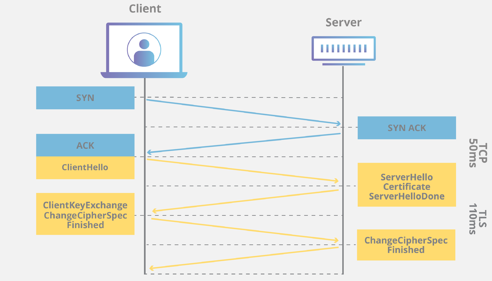
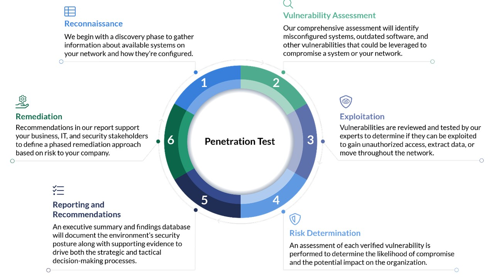

An Overview of Cyber Security

Computer Networks
What is computer network? In general, the computer network is a collection that connects all the distributed computing systems all over the world. It is mainly composed of two main subjects, one of which is the computer, the modern electrical device that we use everyday. Another is the “network”, aiming at providing intercommunication of information between computers.
How does the network works? It turns out that information can only be sent given the hosts’ IP addresses, port numbers, and protocols. To easily understand these concepts, you can think of the computer networks as the delivery system. The communicating process is similar to the action of you writing a letter to your friend. The language that you use is the “protocol”, your friend’s home address is the “IP address”, and the mailbox number is the “port number”.
Cyber Security
Prevention of MITM attack
It is relatively easy to prevent MITM attacks through some encryption methods of modern cryptography. The most common example is the HTTPS protocol where we use on a daily basis. The HTTPS protocol contains TLS encryption that utilizes an asymmetric encryption to encrypt a key for later symmetric encryption of message exchange. (For more information, please refer to the link in the reference page).
In this way, the attacker are very unlikely to be able to read or modify the message even if it gets intercepted due to the attacker’s inability to decipher the encrypted data. The validity and safety of message transfer are thus guaranteed.
Counter DDoS attack
Unfortunately, there are no methods that can prevent DDoS attack completely. Common resolutions include setting up a backup site or filtering HTTP requests do not resolve the problem fundamentally. The easiest approach is to put websites on well-guarded cloud platforms such as CloudFlare or AWS.

The reason why few methods can prevent DDoS attack is that such attack is “violent”. It follows the rule of data transfer but overwhelm victims with absolute advantage of power.
Vulnerability detection
The most effective way to detect whether a service is a vulnerability is to mimic the attacking process towards the service. Vulnerability detection is the most common job for penetration testers. They perform a comprehensive test(attack) on basically every possible cases on potentially vulnerable services and thereby clears out dangers in a system.
